OVERVIEW
Refine an efficient and completed processing systems experience for Mastercard Settings
The core objective was to dismantle a fragmented, multi-system client experience and create a unified Global Enterprise Web Product where customers could implement and manage all their switch services. My role was to lead the design strategy for this transformation. This involved designing, socializing, and implementing scalable, enterprise-level web products across six separate departments, ensuring cross-platform consistency and feature parity.
Timeline
Type
Platform
My role
2023/01 - 2024/12
Financial technology
Responsive web
Senior UX/UI designer
GOAL
Provide seamless experience
- Define the cohesive end-to-end platform architecture by synthesizing fragmented payment network requirements and deep user research.
- Design and deploy the centralized web hub, successfully integrating various payment networks and financial institutions.
- Achieve product excellence by reaching and maintaining 80% customer satisfaction with the new service management platform.
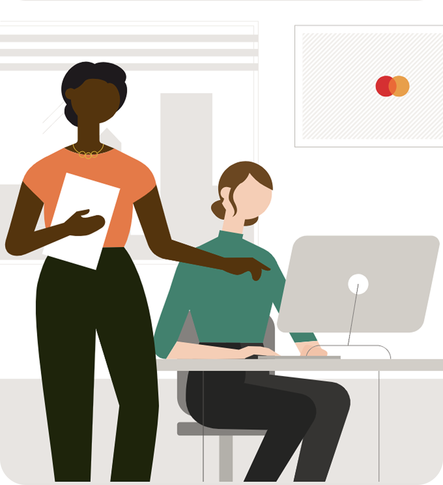
PROBLEM
Current user problems
- Users are tired of switching between multiple platforms and locations to gather supportive information and complete the whole task.
- The implementation process is extremely complicated, and not friendly for users that lacking expereince or not familiar with all the content.
- Part of the documents are shared through mail/email between customers and internal teams, which is hard to track and record.
- External customers and internal teams are blind with the process on both sides.
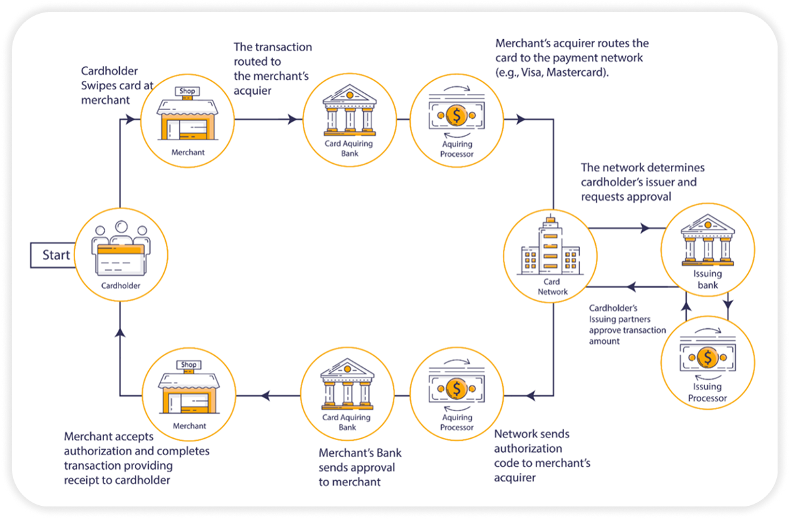

How might we create a seamless experience for multiple types of users to manage their switch configurations in one place?
Our Users
The user roles
External users
Issuer
The bank or financial institution that issues the payment card to the consumer and is responsible for managing the cardholder's account and approving or declining transactions.
Acquirer
The financial institution that contracts with a business to enable them to accept card payments and handles the transfer and settlement of funds into the merchant's account.
Processer
The technology company that provides the secure infrastructure and services to route transaction data between the Issuer and the Acquirer via the card networks, facilitating authorization, clearing, and settlement.
Internal users
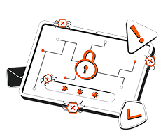
Implementation manager
A project management professional responsible for overseeing the successful setup, configuration, and launch of a fintech product or solution for a new client, bridging the gap between sales and technical execution.
Process
Design sprints
We strategically conduct these intensive workshops to quickly move from a problem to a tested solution, allowing us to thoroughly brainstorm product logic and gather essential information. The workshops and research sections serve as a crucial forum for clarifying solutions not only internally within the design team but also across a wide array of cross-functional partners. By concentrating effort and synthesizing diverse perspectives in a structured environment, we ensure that product logic is clear, validated, and aligned with both business goals and user needs before committing to development.
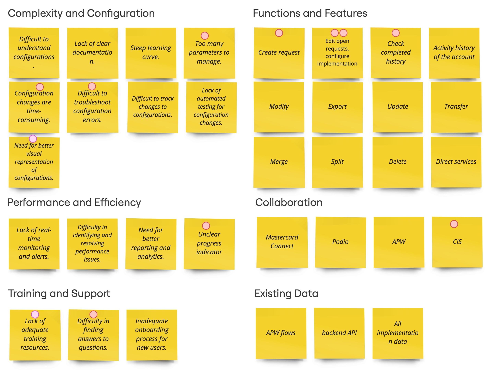
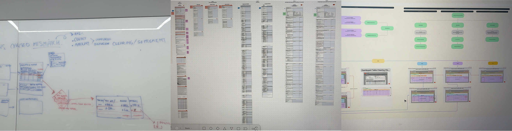
The user journey
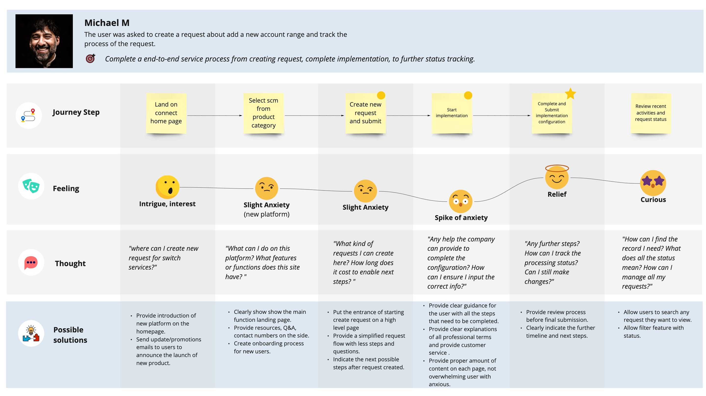
The main user flows
View configuration details
This flow start from the landing page of Mastercard Connect platform which include Mastercard Settings. In this platform, the users are able to view and modify existing configurations, add new products, and manage implementations.
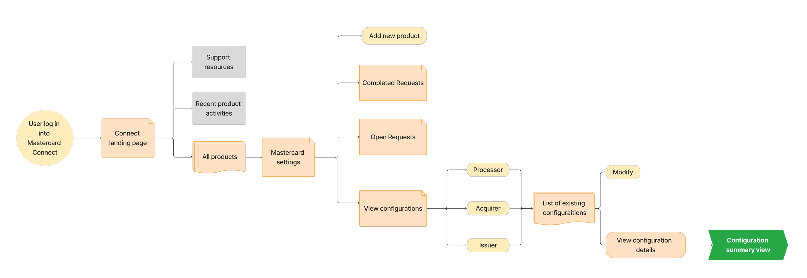
Add new product/Modify/Go to implementation
The users are able to go to the implementation to complete their configurations.
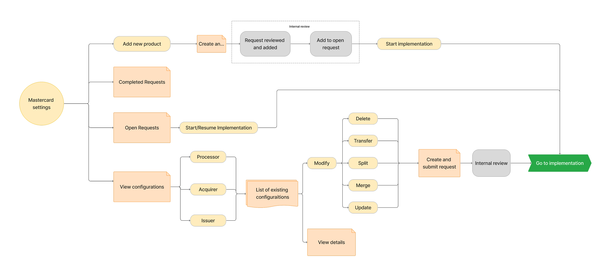
Configuration implementation
Our solution utilizes a rigorous, seven-module phased implementation model, ensuring comprehensive, step-by-step product adoption and configuration. The completion requires collaboration between external customers and internal implementation managers.
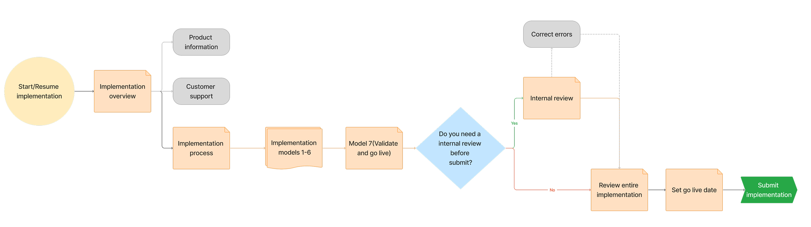
User research
To move beyond the limitations of our initial assessment and achieve a more reliable, comprehensive result, we must transition from a single testing method to conducting multiple kinds of tests. This multi-modal approach will allow us to validate both usability (the 'how') and satisfaction (the 'why').
Quantitative metrics
We must expand our sample size to generate statistically significant data that accurately reflects our target user base, not just a small pool.
Qualitative insight
We will integrate one-on-one deep-dive interviews and unmoderated session recordings to capture the "voice of the user," revealing underlying frustrations and contextual reasons behind their actions.
A/B and multivariate testing
After design revisions, we will run controlled experiments comparing multiple solution variants to definitively prove which design iterations generate superior results and higher satisfaction scores.
- Frustrated and Overwhelmed: They struggle to locate key functions or understand the workflow.
- Lacking Trust: They may doubt the system's ability to handle critical tasks due to the poor interface experience.
FINAL DESIGN
Design library
We used the Mastercard Connect design system for most of the design elements. We also create our own design system for some unique pattern we have that can increase efficiency.
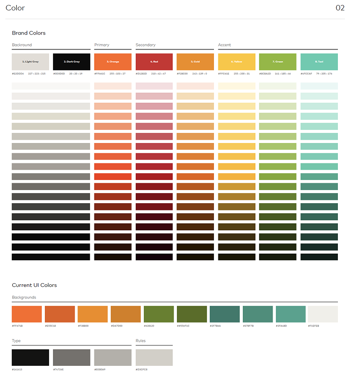
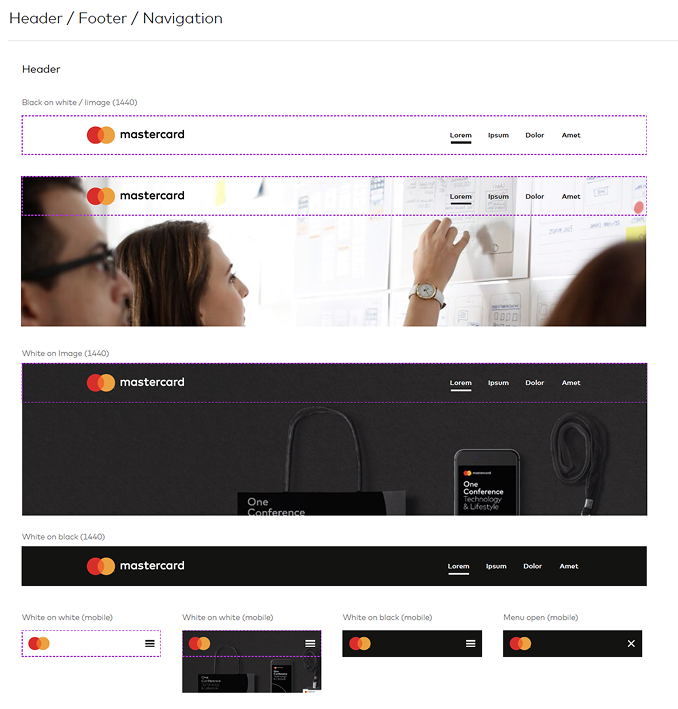
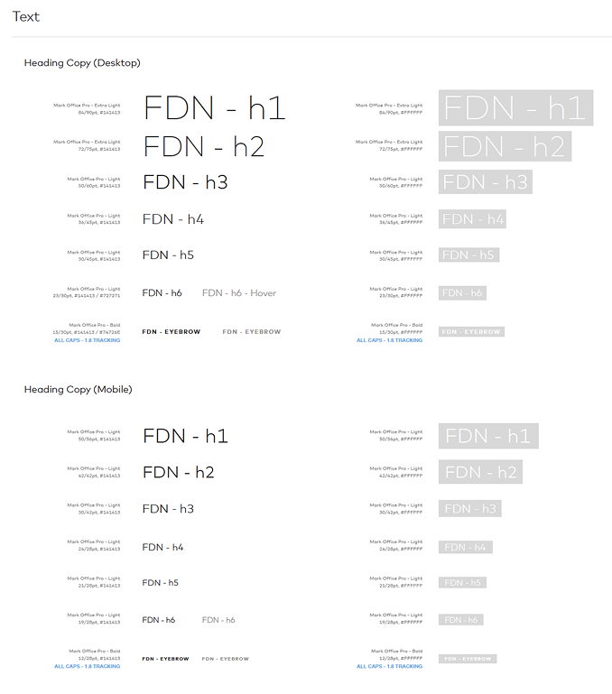
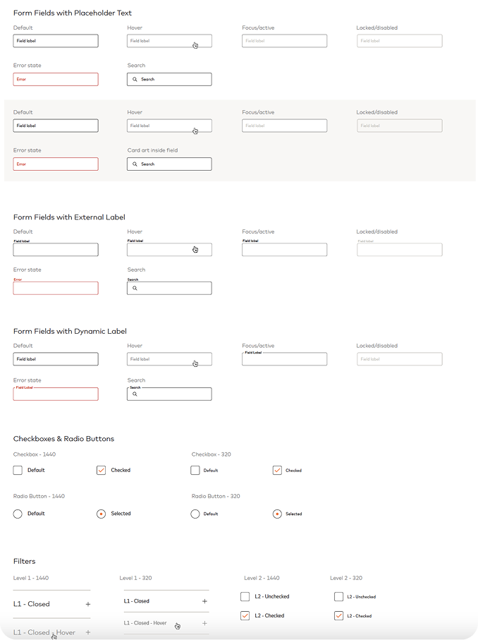
Key screens
Prioritization and hierarchy
We will work with Product Management to strictly prioritize content, moving all non-essential instructional text or advanced settings to dedicated help sections or secondary panels, leaving the primary screen focused only on required action items.
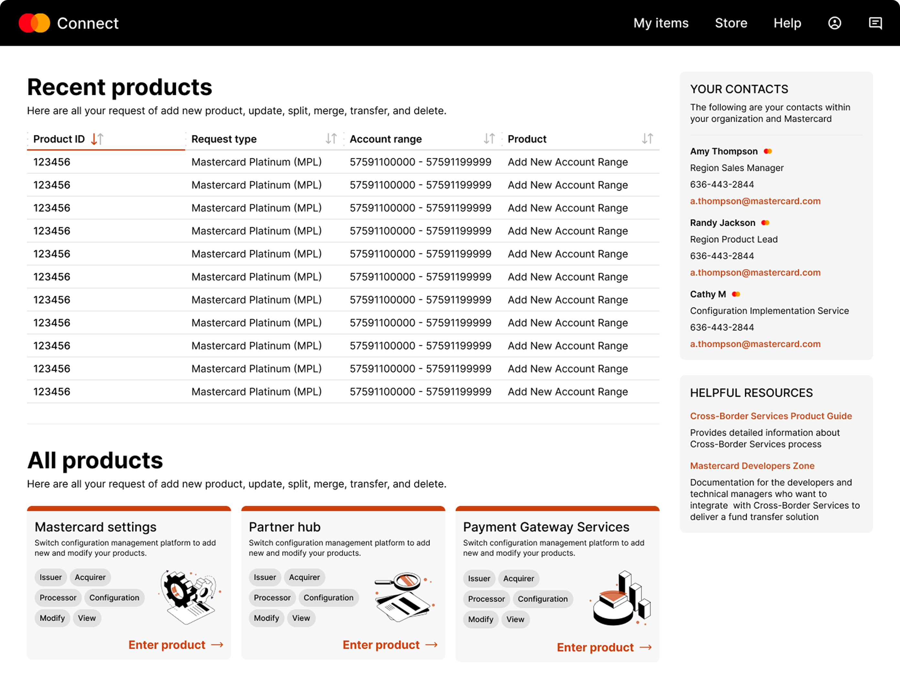
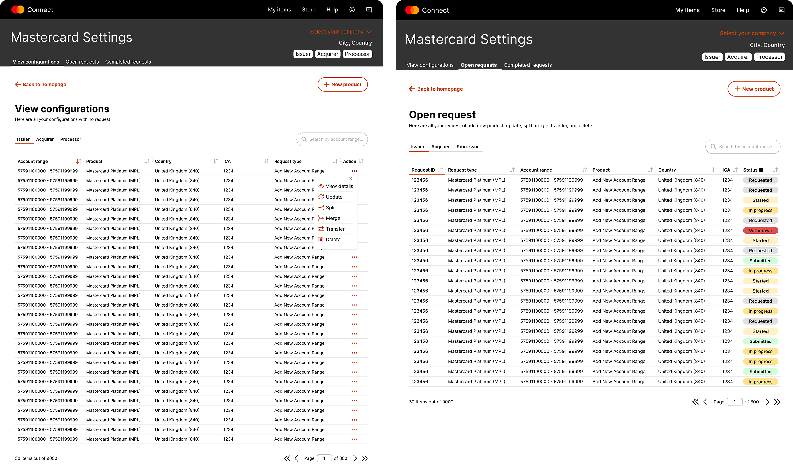
Content chunking and progressive disclosure
We will break large blocks of content into smaller, digestible units. Use techniques like accordions, tabs, and modals to show only the most necessary information initially, allowing users to "drill down" for details only when needed.
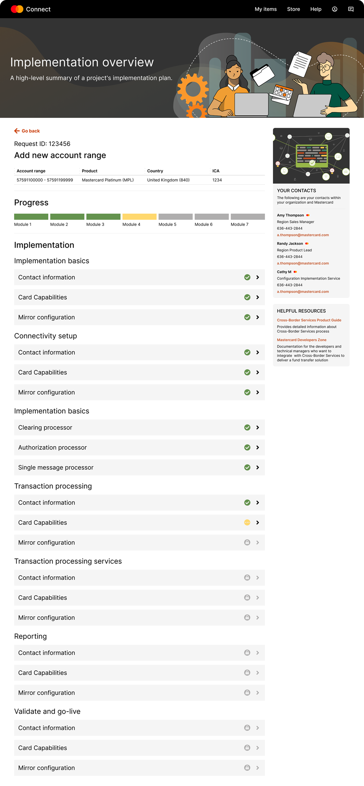
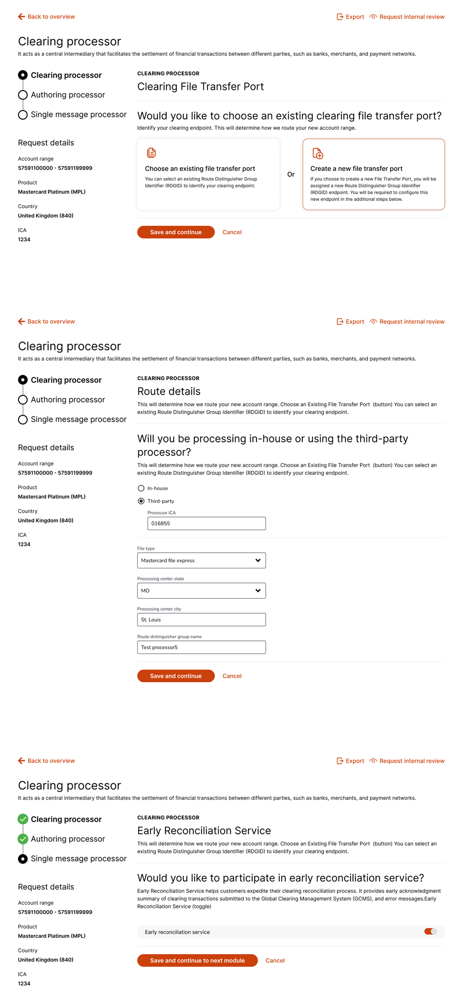
Impact
Project Outcomes and Achievements
The project concluded with significant success, highlighted by the timely hand-off of the entire product deliverables to the development teams. This effort resulted in a high internal productivity rate, with our designers finalizing and handing off over 300 screens per designer.
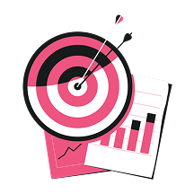
Crucially, the solution was approved by all key stakeholders, and upon initial testing, achieved an excellent customer satisfaction rating of 86.4%, representing a substantial 20% increase over the previous benchmark.
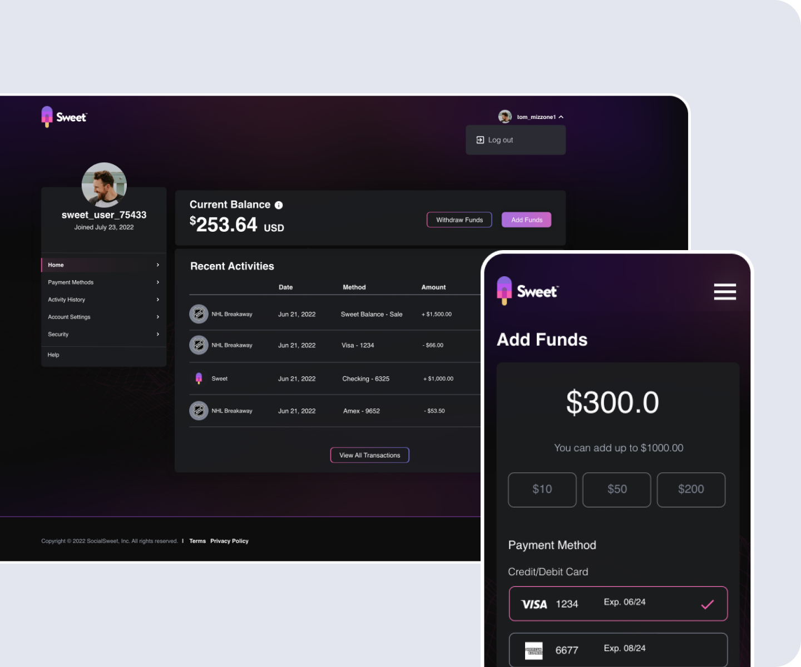